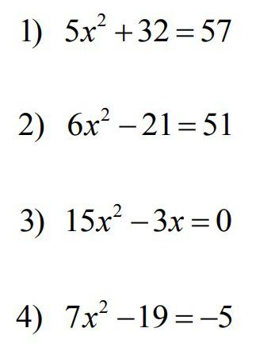

Procedimiento:
1. Lee cuidadosamente las instrucciones y asegúrate de entenderlas antes de comenzar el examen.
2. Resuelve una serie de ecuaciones cuadráticas utilizando los métodos aprendidos durante la unidad, como la factorización, completando el cuadrado y la fórmula cuadrática.
3. Utiliza papel y lápiz, así como una calculadora si es necesario, para realizar cálculos y verificar tus respuestas.
4. Administra tu tiempo de manera efectiva para asegurarte de responder todas las preguntas dentro del límite de tiempo asignado.
5. Una vez completado el examen, revisa tus respuestas y verifica cualquier error que puedas haber cometido.
6. Envía tu examen completado según las instrucciones proporcionadas por el docente.
Características del producto: Examen completo y soluciones correctas.
